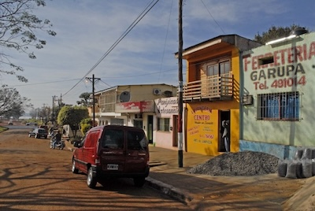
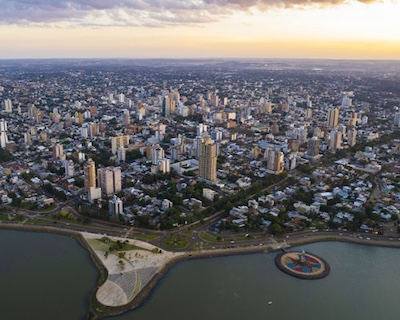

Garupá, Misiónes
This was my last area! I was only here for one transfer. It's a village on the outskirts of Posadas.
Posadas, Misiónes
This is the capital of Misiónes. It lies on the coast of the Paraná River, which separates it from Encarnación, Paraguay. This was where we held our zone conferences. Even though this wasn't one of my official areas, I was able to go on many exchanges here with other sisters in my zone.